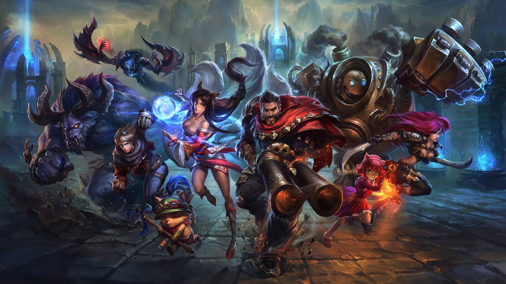

Enemy cooldowns,
read off the screen.
A free summoner spell timer for League of Legends. The program reads the match chat, recognises what the enemy team has used — Flash, Teleport, Heal, ultimates — and shows a discreet bar at the top of your screen. No key to press, nothing to configure mid-game.
- Install
- None
- Processor
- ≈ 0.2 %
- Languages
- EN / FR
Locked, the bar lets clicks through: it cannot steal focus in the middle of a fight.
(12:31) Darius used Flash ← the line the game writes
It reads your screen. That is the whole trick.
Flashwatch never touches League of Legends. It watches the same pixels you are looking at and does the arithmetic you would otherwise do in your head — which is the entire reason it can be built this way at all.
No contact with the game
No injection, no memory reading, no game file touched, no keystroke or click sent, no connection to the game servers. The program and League never meet.
No information you did not have
Every timer starts from a line the game itself printed in your own chat. Nothing is revealed, nothing is guessed — it counts down what you could have counted yourself.
Nothing you cannot check
The source is public and the executable is built from it by an automated workflow you can inspect. The debug tab shows every line it read, as it read it.
Flashwatch is an independent project, not affiliated with or endorsed by Riot Games, and nothing here is a statement on Riot's behalf. What is described above is what the program does — and you can verify all of it in the source. The exhaustive list is in what it does, what it does not.
Three things, done on their own
An enemy cooldown tracker you start before playing and then forget about. It detects the match, finds the chat, and hides itself once you are out of game.
It reads your screen, nothing else
A capture of the chat area every 200 ms, then text recognition. No access to the game: only the pixels you can already see.
It starts from the game's own announcement
“Darius used Flash”: the game only writes that line for the opposing team. The cooldown is computed from it, in English as in French.
Invisible out of game
The bar does not exist on your desktop or in the client: it appears with the game screen and leaves with it. Click-through, free to move and resize.
Installed in three minutes
One file, nothing to install, no administrator rights. Windows 10 or 11, 64-bit.
Download the file
A single .exe, 99 MB — no Python, no installer, no dependencies.
Put it in its own folder (say Documents\Flashwatch\): it creates an assets folder next to itself for its settings.
Get past the Windows warning
Double-click. Windows shows “Windows protected your PC” because the program is not signed.
Click More info, then Run anyway. That is the price of a signing certificate, not a sign that the file is dubious.
Look for the icon, not a window
Nothing opens on screen: the program lives in the notification area, bottom right of the taskbar, sometimes under the ^ arrow.
Double-click the icon to open the settings. Right-click → Quit to close it.
Setup: two things are mandatory
The rest works out of the box. These two do not — and without them you will see nothing.
The first launch walks you through it
You do not have to find any of this on your own. On the very first run a full-window guide opens and takes you through it in order — and it ends on proof rather than on a promise: you paste one line into the Practice Tool chat and watch a timer start.
- Client language mandatory
- If your League is in French, open Settings → Client language and pick Français. The program looks for the chat wording in that language: set to English against a French client, it will detect nothing at all. The change takes effect immediately. The setup guide on the first run asks you this, along with the two below.
- Borderless windowed mandatory
- In League's video options, set Borderless. In exclusive fullscreen, Windows forbids any overlay from drawing — that is not a limitation of this program.
- Chat area if nothing shows up
- The chat is found automatically, whatever your resolution. If timers never start, open Troubleshooting → Frame the chat: a frame appears around the area being read, you drag it onto your chat and you see live what it reads underneath. Apply saves it.
- Game clock area recommended
- Same idea, framed on the match timer at the top of the screen. Once applied, the program reads the game clock directly: an announcement read two seconds late no longer costs any accuracy.
- Comfort to taste
- Three displays to choose from, each draggable anywhere and keeping its own position — they are shown just below. Plus sounds when a spell comes back, a warning a few seconds before, and sorting by role.
Three ways to read the same thing
The same three cooldowns, drawn three ways. There is no right answer — it depends on your screen, your role and what you look at mid-fight — so all three ship and you switch whenever you like.
Chrono track
A hairline along the top of the screen. Each portrait enters on the left at cast and reaches the right as the spell comes back, so where it sits already answers “is anyone nearly back?” before you read a single number. Can be stood on its end, down a side of the screen.
Fixed cards
The track is clever, but a moving thing has to be found before it can be read. Here each portrait stays put and the ring around it closes instead — the same sweep the game draws on your own cooldowns, so it is read rather than learned.
Compact rows
One line per champion: portrait, spell, time left, and a gauge underneath. The most legible of the three and the tallest — the trade. The gauge is what makes it more than a table: it answers “nearly back?” without you having to know every cooldown by heart.
Where the timers come from
From a sentence the game writes itself, and only ever writes for the opposing team. Nothing is guessed: with no announcement, the bar stays empty.
In game, this is the line to read — and the game never shows it for your own team: (12:04) Darius used Flash │ │ │ │ │ └─ the spell │ └─ the champion, an enemy by construction └─ the match clock Also accepted: Darius has used Flash · FR: Darius a utilisé Saut éclair The cooldown comes from the game's table (Flash: 300 s,246 swith Cosmic Insight, assumed by default). The match clock corrects the reading delay: a line read two seconds late costs nothing. To check the program works, press Test: it reads a real game frame that ships with it, from the search for the chat down to the timers, and needs no match running. Wait Darius Flash - 245 sec. This form is accepted too, and typing it in chat is the way to check that your own screen is being read: the game never writes that sentence, and it carries a remaining time.
Every cooldown the program counts from, straight out of its own table — the big number is the spell's own, the green one is the same spell with Cosmic Insight, which is assumed by default and switchable in the settings.
A timer once set is never modified: the same line read again, a line revealed by scrolling back through the chat, or a misread timestamp can no longer shift a running countdown. Only an announcement implying clearly more time is treated as a new cast.
What it does, what it does not
The program behaves like someone watching your screen over your shoulder and counting in their head.
Never
- No injection into League of Legends
- No reading of the game's memory
- No game file modified
- No automated keyboard or mouse action
- No connection to the game servers
Only
- A screenshot of the chat area
- Text recognition, run locally
- Countdowns computed on your machine
- A transparent window over the game
- A one-off download of the public icons
Every version
Every published version stays downloadable, with its notes. If a new one causes trouble, the previous one is right below it.
Loading versions…
Frequently asked
Windows says the file is dangerous, is that normal?
Nothing shows up during my match.
Is it heavy on resources?
Can I run it twice?
Where are my settings?
assets folder created next to the executable: settings, cached icons and the flashwatch.log file. The program is portable — move the folder and you keep everything. If the location is read-only, it falls back to %LOCALAPPDATA%\Flashwatch.Is it just a Flash timer?
What about enemy ultimates?
Does it work at 1440p, 4K, on two monitors?
One file. Three minutes.
Windows 10/11 64-bit · no installation · free